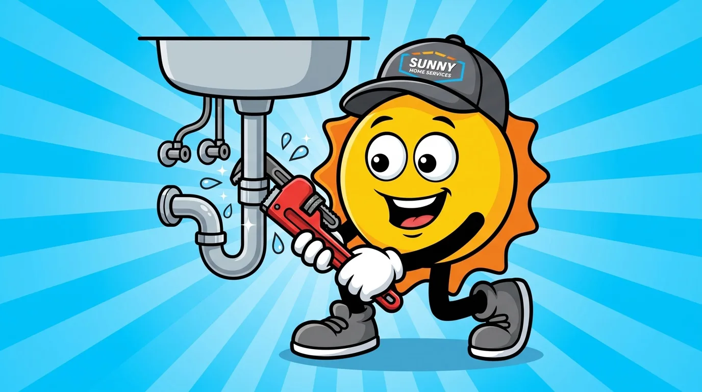
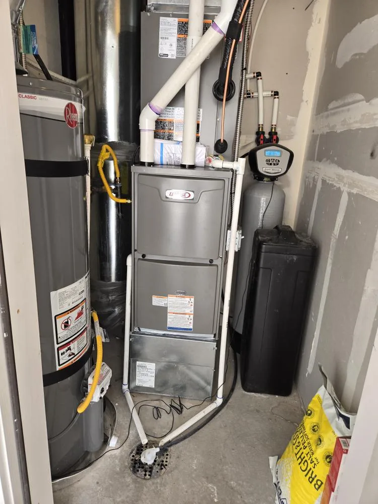

385.853.8116

Same-Day Response. Upfront pricing. Licensed plumbers.

When a pipe bursts on a freezing Draper night or the water heater quits before a busy morning, you need a plumber who answers fast and prices the work upfront. Sunny Home Services provides licensed plumbing across Draper and the surrounding Wasatch Front, from water heaters and drain cleaning to leak detection and emergencies. Our team shows up on time, explains your options in plain language, and gets your home running again.

Repair, maintenance, and installation of traditional and tankless water heaters for your Draper home.
Learn More ›Drain cleaning, sewer line repair, trenchless repairs, and hydro jetting for stubborn clogs and backups.
Learn More ›We pinpoint hidden leaks behind walls, under slabs, and in supply lines before they cause damage.
Learn More ›Burst pipe or major leak? Same-day emergency plumbing so a sudden problem does not flood your Draper home.
Learn More ›From no hot water to hard-water sediment, burst pipes, and stubborn drains, our licensed plumbers handle it all across Draper and the Wasatch Front. We repair and install water heaters, softeners, and supply lines with clean, code-compliant work and upfront, flat-rate pricing.



Whether it is a failing water heater, a stubborn drain, a hidden leak, or a full plumbing emergency, our local team is ready. Call or book online for plumbing service in Draper.